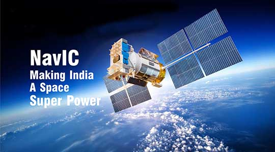

Satellites provide information about Earth's clouds, oceans, land and air. They also can observe wildfires, volcanoes and smoke. All this information helps scientists predict weather and climate. It helps farmers know what crops to plant. It helps control the spread of disease. Earth and the moon are called “natural” satellites. But usually when someone says “satellite,” they are talking about a “man-made” satellite.Let us study some of them-
GSAT-20 (also known as CMS-03 or GSAT-N2) is a communication satellite developed by Indian Space Research Organization and launched by a SpaceX Falcon 9. The GSAT-20 satellite is funded, owned and operated by New Space India Limited. The entire capacity onboard CMS-02 satellite was leased to Dish TV.

The first NavIC satellite was launched in July of 2013. As of 2022, the NavIC system consists of eight satellites, three of them in geostationary orbits and five in inclined geosynchronous orbits, with plans to expand to 12 satellites.To meet the positioning, navigation and timing requirements of the nation, ISRO has established a regional navigation satellite system called Navigation with Indian Constellation (NavIC).
Over all, India's economic progress has made its space programme more visible and active as the country aims for greater self-reliance in space technology. In 2008, India launched as many as 11 satellites, including nine from other countries, and went on to become the first nation to launch 10 satellites on one rocket.
Satellites are also the best means by which to track storm movements and predict their path and intensity, by detecting changes in pressure, and wind direction and speed. They can therefore help to warn of potentially devastating consequences, like floods, wildfires, destruction to assets, or danger to lives.
Satellites were once as big as a small school bus and weighed up to 6 tons. The situation has changed over the last decade with the development of small standardized satellites and reusable launch capabilities driving the growth of new space-based infrastructure.
If satellites would not exist,within hours, most of the planet's traffic would grind to a halt, the world economy would shut down, and most countries would declare a state of emergency. Even in the best-case scenario, our civilization would be set back by decades